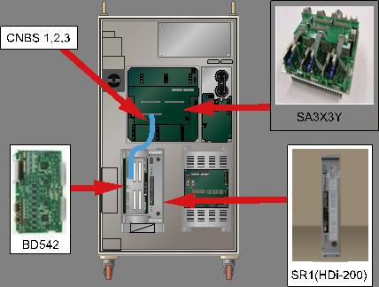
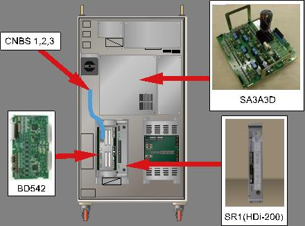
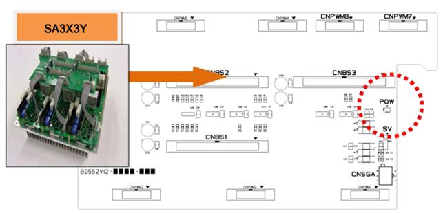
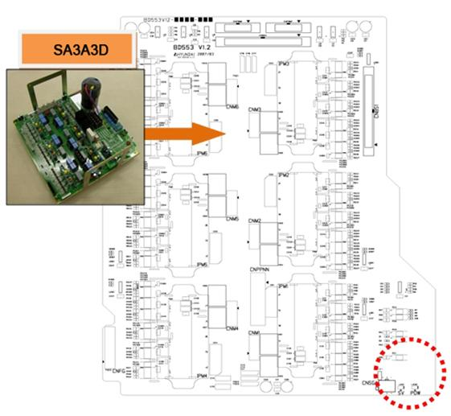
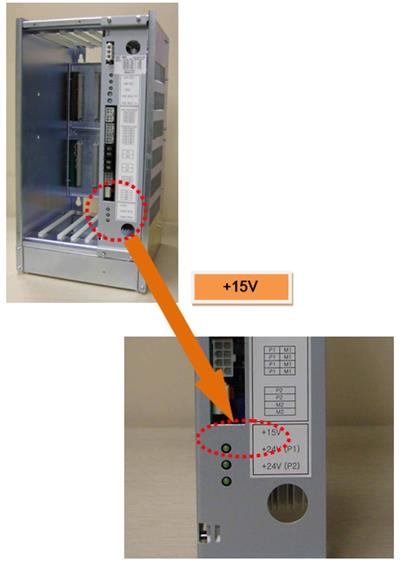
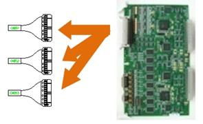
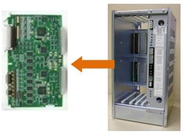

Previous error code: E0114 Drive unit control voltage drop
1.1.51.1. Outline
Control power that supplied to the Servo Drive Unit +15V has been reduced. This error is detected by the Servo Drive Unit and transferred to the Servo Board through CNBS cable.
1.1.51.2. Causes and examine methods
|
(1) Please check the power indicator LED. n Please check the 'POW' LED of servo drive unit n Please check the '+15V' LED of SR1 (control power supply unit).
< Case: Both of module's LED are OFF > (2) Please check the output of SR1. (Control power supply unit). n Please remove CNBS cable from BD542 and check the LED. n Please remove the Servo Board from the Rack and check the LED.
(3) Please examine the SR1 (control power supply unit). n Please check the input voltage to SR1. n Please replace the SR1 and check the LED.
< Case: Only the Servo Drive Unit's 'POW' LED is OFF > (4) Please replace the related components and check the power indicator LED. n Please replace CNBS cable and check the LED. n Please replace the Servo Board and check the LED. n Please replace the Servo Drive Unit and check the LED. |
(1) Please check the power indicator LED.
Drive unit control voltage reduction error is caused by a reduction of control voltage +15V. This error will be detected by the Servo Drive Unit and transferred to the Servo Board (BD542) through CNBS1, 2, 3 cables to be handled.

(a) Hi5-N00 controller

(b) Hi5-N30 controller
Figure 1.162 Arranging the parts related to the drive unit control voltage drop
n Examine the 'POW' LED of Servo Drive Unit
Check the "POW" of the drive unit control voltage error detection module.
If the power is being supplied normally, the LED light should be stays on.
Ø Medium size Robot's Servo Drive Unit : SA3X3Y
Ø Small size Robot's Servo Drive Unit : SA3A3D

(a) Hi5-N00 controller (SA3X3Y)

(b) Hi5-N30 controller (SA3A3D)
Figure 1.163 Arranging the parts related to the "POW" LED
n Examine the '+15V' LED of SR1
Please check the LED of SR1 if the Servo Drive Unit's 'POW' LED light is off.
Please check if the LED of SR1 and the LED of Servo Drive Unit are both off at the same time.

Figure 1.164 Locations of '+15V' LED Related Components of SR1
(2) Please check the output of SR1.
Please remove the wirings and components that are connected to the Servo Drive Unit and examine the '+15V' LED in order to check the output of SR1 itself.
n Remove CNBS cable and check the LED
Please remove the CNBS1, CNBS2, CNBS3 that connect the Servo Drive Unit and the Servo Board. After the removal, please check the LED of SR1. If the '+15V LED' of SR1 turns to ON after the removal of cables, the Servo Drive Unit is faulty. Please replace the Servo Drive Unit with new one.

Figure 1.165 Removal of CNBS cable
n Remove the Servo Board (BD542) and examine the LED
Please check the SR1's LED after you remove the Servo Board from a Rack. If the '+15V LED' of SR1 turns to ON after the removal of Servo Board, the Servo Board is faulty. Please replace the Servo Board with new one.

Figure 1.166 Removal of Servo Board from the Rack
(3) Please examine the SR1 (control power supply unit).
Control power supply unit received AC 220V (input) and output the necessary control power to each board from the internal circuit.
n Examine the input voltage of SR1
If the input voltage to SR1 exceeds the specification, the output of control power may have an error. If the input voltage exceeds the allowed range, please examine according to a controller's input voltage examination procedures and a controller's single-phase internal voltage examination procedures.
Ø SR1 input voltage specification: single-phase AC 48V
Ø Allowed range: 44V ~ 52V
n Replace the SR1 and check the LED
Please replace the SR1 with new one and check the '+15V' LED. After a new one is installed, if the LED is turned on, the previous SR1 is defective. Please replace it and use.
(4) Please replace the related components and check the power indicator (LED).
Please replace the Servo Drive Unit, Servo Board, CNBS cable and check the 'POW' LEF of the Servo Drive Unit.
n Replace the CNBS cable and check the 'POW' LED
Please replace the CNBS1, CNBS2, CNBS3 that connects the Servo Drive Unit and the Servo Board, and check the 'POW' LED. If the 'POW' LED is ON after the replacement, cable is faulty. Please replace it with new one.
n Replace the Servo Board and check the 'POW' LED
Please replace the Servo Board, and check the 'POW' LED. If the 'POW' LED is ON after the replacement, the Servo Board is faulty. Please replace it with new one.
n Replace the Servo Drive Unit and check the 'POW' LED
Please replace the Servo Drive Unit, and check the 'POW' LED. If the 'POW' LED is ON after the replacement, the Servo Drive Unit is faulty. Please replace it with new one.
Ø Medium size Robot's Servo Drive Unit: SA3X3Y
Ø Small size Robot's Servo Drive Unit: SA3A3D